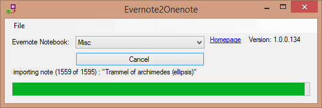

Evernote2Onenote
Evernote2Onenote is a small tool to import
Evernote notebooks to Onenote.

Evernote2Onenote requires .NET Framework 4.8. You can get this via Windows
update or directly from here.
Details: how it works
You can export your Evernote notebooks as an ENEX file. This file is then used
by Evernote2Onenote to import those notebooks into Onenote.
Prerequisites
Evernote2Onenote requires that Onenote is installed.
Desktop version
The preinstalled versions of Onenote from the Windows App Store won't work.
You need the desktop version of Onenote!
How to use
Start Evernote2Onenote, then select the the options you want for your import.
Usually the default options are good enough.
Then click the "Import ENEX file" button, select the exported notebook file from Evernote.
After that the import starts and imports all the notes into Onenote.
Evernote tags
For Onenote that comes with Office:
Notes are imported to Onenote in a tab that has the same name as
the tag the note has. If a note has multiple tags, that note is
imported multiple times to Onenote, so you get duplicate notes!
To avoid duplicate notes, you should first remove duplicate tags
from your notes in Evernote. The easiest way to do that is to
create an empty new notebook, export your real notebook in enex
format and uncheck tags from the export options. Then
import that enex file into the new notebook. And then of course
only import that new notebook into Onenote.
Installation
Evernote2Onenote does not require installation. It can be run from any
place. Just double-click on the file to run it.
Report problems
In case you encounter a bug or some other problem, please file an
issue in the issue tracker.
Download
Evernote2Onenote is open source (GNU GPL v3).
You can get the source code from the GitHub project page.
The source is in a subfolder for the EvImSync project since a lot of the code
is similar to that project.
If you just want the compiled application, get it from the
download page.